Unpaired T1 → T2 Brain MRI Translation: CycleGAN vs CUT vs SynDiff
A fair comparison of two GANs and a diffusion model, and a hidden shift we found in SynDiff
TL;DR
- We trained computers to turn one kind of brain MRI scan (T1) into another (T2), using only unmatched scans: the T1s and the T2s came from different patients.
- We compared three methods on exactly the same data, scoring only inside the brain: CycleGAN, CUT and the diffusion model SynDiff.
- Surprise 1: CUT, which we expected to win, did much worse than CycleGAN (brain SSIM 0.146 vs 0.512). It keeps T1's fine light-and-dark pattern instead of flipping it the way a real T2 does.
- Surprise 2: SynDiff's images looked excellent but scored worst of all (0.105). Every output sat about 8 pixels too far right and 2 pixels too high. Its two translation directions learned equal and opposite shifts, which cancel on a round trip, so training never noticed.
- The fix: a silhouette loss, which says "the brain outline of every output must sit where its input's outline sits". It removed the shift from all four of SynDiff's generators. SynDiff + silhouette loss reached brain SSIM 0.543 and beat CycleGAN on 17 of 20 test patients (p = 0.00017). On PSNR and MAE the two are about level.
Two photographs of one brain
An MRI scanner can photograph the same brain in several different "styles". In one style, fluid is black; in another, fluid glows white. Doctors read these styles side by side, because each one makes different things stand out. Each style takes minutes of scanner time, and sometimes one is missing: the patient moved, the session was cut short, or a hospital's routine simply left it out.
So here is a tempting question: could a computer look at the style we have and imagine the one we don't? This is called image-to-image translation, and it is what our class project was about. We took T1-weighted brain scans and asked three different machine-learning methods to produce the matching T2-weighted scans.
This post tells the story of that project, including two wrong turns. Our first hypothesis turned out to be backwards. Then the method that looked best turned out to score worst, because of a flaw that is invisible to the eye: its whole output was shifted by a few pixels. We tracked down where the shift comes from, and fixed it with one small extra rule during training. No machine-learning background is needed: we explain every idea as it comes up.
1. Problem statement
1.1 MRI in one paragraph
MRI (magnetic resonance imaging) uses a strong magnet and radio waves to measure signals from the hydrogen in the body's water and fat. By changing the timing of the radio pulses, the scanner can make different tissues bright or dark. Two of the most common settings are called T1-weighted and T2-weighted (we'll just say T1 and T2). In T1, the fatty white matter deep in the brain is bright and fluid is dark. In T2 it is roughly the other way round: fluid is bright and white matter is darker. Swelling around a brain tumour holds extra water, so it often stands out brightly in T2. A 3D scan is a stack of 2D images called slices; we work one slice at a time.
1.2 The task, precisely
Input: one 2D T1 slice of a brain, 256 × 256 pixels, brightness from 0 (black) to 1 (white).
Output: a 2D T2 slice of the same size, showing the same patient's anatomy as it would look in T2.
Training data: unpaired. We have a pile of T1 slices from 160 patients and a pile of T2 slices from a different 160 patients. No T1 slice in training ever comes with its own T2.
Why tie our own hands like this? If we had matched pairs (the same slice in both contrasts), we could simply show the computer thousands of "this T1 should become this T2" examples. In practice, cleanly matched pairs are often hard to get: scans come from different hospitals, machines and protocols. Unpaired methods can learn from whatever is available. The dataset we use, BraTS 2021, actually has both contrasts for every patient. That is lucky for us: we hide the pairs during training to simulate the unpaired setting, then bring them back at test time as an answer key. For every test slice we know exactly what the real T2 looks like.
1.3 What counts as "good"
A T2 that merely looks realistic is not enough. A synthetic scan that invents or erases a tumour while looking perfectly plausible would be worse than useless. So we judge every method by how closely its output matches the real T2 of the same patient, pixel by pixel, inside the brain only. The exact scores are defined in Section 3.6.
2. Related work
Our three methods sit on two branches of a family tree. The GAN branch starts with Pix2Pix and leads to CycleGAN and CUT. The diffusion branch leads through DDGAN to SynDiff. Here is that tree, one idea at a time.
2.1 GANs: a forger and a detective
A generative adversarial network (GAN) [1] trains two neural networks against each other. The generator is a forger: it turns an input (for us, a T1 slice) into an image. The discriminator is a detective: it looks at an image and says whether it is real or forged. Each network is trained by nudging its millions of internal numbers to make a loss smaller; a loss is just a score of how badly the network is doing. The classic GAN objective is:
\[ \begin{aligned} \min_G \max_D \;\; & \mathbb{E}_{y}\big[\log D(y)\big] \\ +\; & \mathbb{E}_{x}\big[\log\big(1 - D(G(x))\big)\big] \end{aligned} \]In words: the detective \(D\) tries to give real T2 images \(y\) a high score and forgeries \(G(x)\) a low one, while the forger \(G\) tries to make forgeries the detective can't tell apart.
CycleGAN and CUT use a "least-squares" variant of this objective [2], and SynDiff uses a smooth logistic variant; the idea is the same. The key limitation is already visible here: the detective only asks "does this look like a T2?", never "is this the T2 of this particular patient?"
2.2 With pairs: Pix2Pix
Pix2Pix [3] (Isola et al., CVPR 2017) is the paired version. Alongside the GAN loss, it directly compares each output with its true target pixel by pixel. It also popularised the PatchGAN discriminator, which judges overlapping 70 × 70-pixel patches instead of the whole image. CycleGAN, CUT and SynDiff's translation networks all use PatchGAN discriminators; SynDiff's diffusion discriminators are different and give a single score for the whole image (Section 3.4). Pix2Pix needs matched pairs, so it is not an option in our unpaired setting. With pairs it would be a natural "upper bound", and we list it as future work.
2.3 Without pairs: CycleGAN
CycleGAN [4] (Zhu et al., ICCV 2017) removes the need for pairs with one clever idea: cycle consistency. It trains two generators, one for T1 → T2 and one for T2 → T1. If you translate a sentence from English to French and back, you should get your original sentence; likewise, a T1 translated to T2 and back should return the original T1. That round-trip check, the cycle loss, ties each output to its input without ever seeing a pair. CycleGAN assumes that a translation which can be undone must have kept the content. As we will see, a translation can be undone even when it gets something wrong.
2.4 Contrastive translation: CUT
CUT (Contrastive Unpaired Translation) [5] (Park et al., ECCV 2020) drops the second generator. It ties output to input with contrastive learning on small patches instead. Pick a patch of the output; the input patch from the same location should be more similar to it (in the network's internal features) than input patches from other locations are. This is called the PatchNCE loss. The authors report better quality than two-sided methods such as CycleGAN, with less training time, on natural-image benchmarks. Our project proposal hypothesised that CUT would keep fine anatomical structure better than CycleGAN, because PatchNCE ties every output patch to its own input patch. Section 4.1 tests that.
2.5 Diffusion models: DDPM, DDGAN, SDEdit, DDIB
Diffusion models learn to remove noise. During training, a clean image is gradually buried in random noise, and a network learns to undo one small step of that corruption. To generate, you start from pure noise and apply the network again and again. DDPM [6] (Ho et al., NeurIPS 2020) showed this produces excellent images, but it takes about a thousand small denoising steps, which is slow. DDGAN (denoising diffusion GANs) [7] (Xiao et al., ICLR 2022) noticed that small steps are needed only because each step is modelled with a simple bell-curve (Gaussian) guess. Instead, it takes a few large steps and models each one with a conditional GAN, cutting sampling down to a handful of steps.
Diffusion models can also translate without pairs. SDEdit [8] (Meng et al., ICLR 2022) adds some noise to an input image and then denoises it with a model trained only on the target style. The amount of noise trades realism against faithfulness to the input. DDIB [9] (Su et al., ICLR 2023) trains one diffusion model per style and translates by encoding the source image into noise with one model and decoding it with the other. We did not run these methods; they are natural next baselines.
2.6 Diffusion for unpaired medical translation: SynDiff
SynDiff [10] (Özbey, Dalmaz et al., IEEE Transactions on Medical Imaging 2023) brings DDGAN's few-large-steps idea to unpaired medical image translation. Its problem: a diffusion model that translates T1 → T2 needs to be conditioned on a T1, and training that normally needs pairs. SynDiff's answer is to include a CycleGAN-style pair of translation networks whose job is to manufacture the missing half of each pair. A diffusion generator then learns from those manufactured pairs (details in Section 3.4). The authors evaluated it on multi-contrast MRI and MRI–CT translation and report "quantitatively and qualitatively superior performance against competing baselines", including GAN and diffusion models. We used the official code, unmodified.
2.7 When translation goes wrong: hallucination and structure losses
Cohen, Luck and Honari [11] (MICCAI 2018) gave a sobering demonstration. They trained translation models on target images that had too many or too few tumours, and the translated images gained or lost tumours to match. This happens because GAN-style losses match the overall look of the target collection, not the facts of each image. This is why we score against the real T2 of each patient instead of judging realism.
One way to keep structure in place is a loss that compares the layout of input and output while ignoring their brightness. MIND [12] (Heinrich et al., Medical Image Analysis 2012) describes each pixel by how similar its small neighbourhood is to the neighbourhoods around it. That description stays roughly the same across MRI contrasts, which makes it useful for aligning scans of different types, the job it was designed for. Yang et al. [13] used a MIND loss to constrain a CycleGAN for brain MR → CT translation. MIND was one of the two fixes we tried.
2.8 The data: BraTS 2021
The BraTS 2021 benchmark [14] (Baid et al.), building on earlier BraTS releases [15, 16], provides brain MRI from patients with gliomas (a type of brain tumour). Each of the 1,251 training cases has four co-registered contrasts (T1, contrast-enhanced T1, T2 and FLAIR). They are skull-stripped (the skull and scalp are removed, leaving only the brain) and stored as 240 × 240 × 155 volumes. We use only T1 and T2.
2.9 What is new in our project
- A fair three-way comparison. A GAN (CycleGAN), a contrastive GAN (CUT) and a diffusion model (SynDiff) were trained on the same unpaired, patient-level split. All three were scored on the same 200 test slices with the same brain-only metrics, and compared patient by patient with a statistical test.
- A hidden, cycle-cancelled shift in SynDiff. Its outputs looked right but were displaced by several pixels. A four-generator experiment shows the two translation directions carry equal and opposite shifts, which the cycle loss cannot see.
- A simple silhouette loss that removes it. It is chosen using validation patients only, needs no post-processing, and turns SynDiff from the worst-scoring model into the best on brain SSIM.
3. Approach
3.1 Data: from hospital volumes to training slices
Input: the BraTS 2021 T1 and T2 volumes. Output: folders of 256 × 256 grayscale PNG slices, plus a record of every choice (split.json). Our script preprocess.py does five things:
- Split by patient. Pick 400 of the 1,251 patients at random (seed 42). 160 patients provide only T1 slices for training, a different 160 provide only T2 slices, and 80 are held out for testing. No patient appears in two groups, so training is truly unpaired and the test patients are never seen.
- Normalise brightness per scan. MRI brightness has no fixed units, so each volume is clipped to the 0.5th–99.5th percentile of its brain voxels and scaled to 0–1. Background stays exactly 0. Clipping ignores the few extreme pixels.
- Choose slices. Keep horizontal (axial) slices whose brain area is at least 40% of that volume's largest slice, which skips the nearly empty top and bottom. Then keep every second one, since neighbouring slices are near-duplicates.
- Format. Rotate upright, pad 240 → 256 with black, save as 8-bit grayscale PNG.
- Answer key. For test patients, save the T1, the T2 and the brain mask under identical filenames.
| Set | Patients | Slices | Used for |
|---|---|---|---|
| trainA (T1 only) | 160 | 7,551 | training |
| trainB (T2 only, different patients) | 160 | 7,514 | training |
| test (T1, T2, brain mask) | 80 | 3,824 | held out |
| ↳ fixed evaluation subset | 20 | 200 | all reported test scores (10 slices per patient) |
| ↳ validation patients | 5 | 241 | choosing SynDiff settings only (not in the subset above) |
Table 1. Our split of BraTS 2021. All numbers from split.json and results/syndiff_val/val_results.csv.
Assumption: T1 and T2 line up. Scoring an output pixel by pixel against the real T2 only makes sense if a patient's T1 and T2 are perfectly aligned. We checked this on 5 random patients with check_alignment.py. Shapes and positions match exactly, and the brain outlines overlap with a Dice score of 1.000. Dice measures the overlap of two shapes:
In words: twice the shared area divided by the total area. 1 means the outlines are identical; 0 means they don't touch.
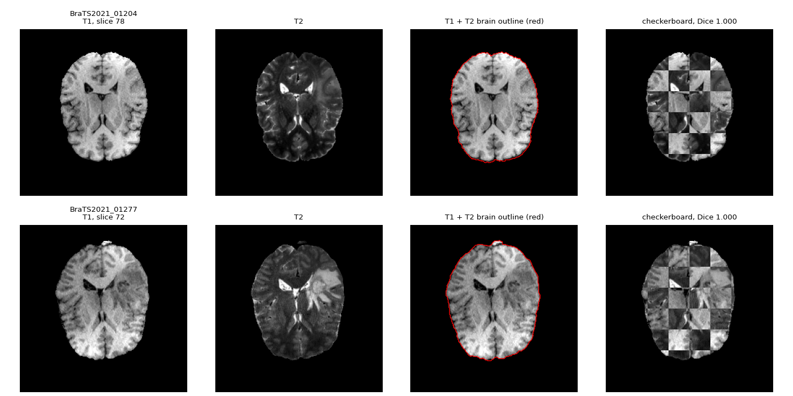
3.2 CycleGAN
Input: a T1 slice \(x\). Output: a synthetic T2 slice \(G(x)\). Networks: two generators, \(G\) (T1 → T2) and \(F\) (T2 → T1), each a ResNet with 9 residual blocks (11.37 million parameters), plus two 70 × 70 PatchGAN discriminators, one per contrast.
The cycle loss is:
\[ \begin{aligned} \mathcal{L}_{\text{cyc}} \;=\; & \mathbb{E}_{x}\,\big\lVert F(G(x)) - x \big\rVert_1 \\ +\; & \mathbb{E}_{y}\,\big\lVert G(F(y)) - y \big\rVert_1 \end{aligned} \]In words: translate there and back in both directions, and measure the average absolute pixel difference from the starting image (that is what \(\lVert\cdot\rVert_1\) means).
The full objective adds a GAN loss for each generator and an "identity" loss, which says a T2 fed to the T1 → T2 generator should come out unchanged:
\[ \begin{aligned} \mathcal{L} \;=\; & \mathcal{L}_{\text{GAN}}(G, D_{T2}) + \mathcal{L}_{\text{GAN}}(F, D_{T1}) \\ +\; & 10\,\mathcal{L}_{\text{cyc}} + 5\,\mathcal{L}_{\text{idt}} \end{aligned} \]In words: look real, survive the round trip (weighted 10 times a GAN term), and don't change an image that is already in the target style.
Design choices: we used the official code at a pinned commit with its default settings, set to grayscale input and output at 256 × 256 with no resizing. Assumptions: the T1 → T2 mapping can be inverted, and a mapping that can be inverted has preserved the content.
3.3 CUT
Input / output: the same as CycleGAN. Networks: one generator (the same ResNet-9 design, 11.37 million parameters), one PatchGAN discriminator, and a small two-layer network that turns patch features into short vectors for comparison. There is no T2 → T1 generator and no cycle.
The PatchNCE loss for one output patch is a multiple-choice quiz:
\[ \begin{gathered} \ell(v, v^{+}, v^{-}) \;=\; -\log \frac{e^{s^{+}}}{e^{s^{+}} + \sum_{n=1}^{N} e^{s^{-}_{n}}} \\ \text{with}\;\; s^{+} = \frac{v \cdot v^{+}}{\tau}, \quad s^{-}_{n} = \frac{v \cdot v^{-}_{n}}{\tau} \end{gathered} \]In words: among one right input patch and \(N\) wrong ones, the output patch should "pick" the right one; the loss is small when its similarity score \(s^{+}\) beats all the others. The temperature \(\tau = 0.07\) sets how sharp the choice must be.
CUT samples 256 locations in each of 5 layers of the generator's encoder, so each quiz has 1 right answer and 255 wrong ones. Its total loss is the GAN loss plus PatchNCE on T1 → T2, plus PatchNCE on T2 images passed through the same generator (CUT's identity version), all with weight 1. Design choices: the official code, default "CUT" mode, the same training budget as CycleGAN. We made one change, a single line in the data loader, because the loader always read images as colour (RGB) and crashed with single-channel input. Assumption: an output patch should stay recognisably similar to its input patch.
3.4 SynDiff
First, the diffusion idea in one equation. The forward process corrupts a clean image \(x_0\) a bit at each step \(t\):
\[ q(x_t \mid x_{t-1}) \;=\; \mathcal{N}\!\big(x_t;\ \sqrt{1-\beta_t}\,x_{t-1},\ \beta_t \mathbf{I}\big) \]In words: shrink the previous image slightly and add Gaussian noise of strength \(\beta_t\); after enough steps, only noise is left.
The reverse process is what we learn: go from noisier to cleaner. SynDiff takes only \(T = 4\) large steps. At each step a diffusive generator \(G_{\text{diff}}\) looks at the noisy image \(x_t\), a source image \(s\) of the other contrast, the step number \(t\), and a random code \(z\). It guesses the clean image, and SynDiff then jumps to a less noisy image consistent with that guess:
\[ \begin{gathered} \hat{x}_0 = G_{\text{diff}}(x_t,\, s,\, t,\, z), \\ x_{t-1} \sim q\big(x_{t-1} \mid x_t, \hat{x}_0\big) \end{gathered} \]In words: "guess the finished T2, then take one big step toward it". A step-aware discriminator judges whether each (\(x_{t-1}\), \(x_t\)) step looks like a real denoising step. Unlike a PatchGAN, it adds up its features over every position and gives one score for the whole image.
The trick for unpaired data. To learn "T1 source → T2 image", SynDiff needs matching pairs, which we don't have. So it also trains two translation networks, a CycleGAN-style pair with their own discriminators and cycle loss. To teach the T1 → T2 diffusive generator, it takes a real T2 \(y\), makes a fake T1 \(F(y)\) with the T2 → T1 translation network, and asks the diffusive generator to recover \(y\) from a noisy copy of \(y\) plus \(F(y)\). The manufactured T1 is the source; the real T2 is the target (Figure 5, top).
The generators are trained together with one combined loss:
\[ \mathcal{L}_{G} \;=\; \mathcal{L}^{\text{diff}}_{\text{adv}} + \mathcal{L}^{\text{trans}}_{\text{adv}} + 0.5\,\big(\mathcal{L}_{\text{cyc}} + \mathcal{L}^{\text{diff}}_{1}\big) \]In words: diffusion steps and translations should both look real (the two adversarial terms); the translation networks should survive a round trip; and the diffusive generators' guesses should match the real images they were built from (the L1 term).
Design choices: SynDiff's official code, unmodified, with the settings from its README: 4 steps, batch size 1, learning rates 1.6 × 10⁻⁴ (generators) and 10⁻⁴ (discriminators), and an exponential moving average of the weights. We trained 30 epochs (one epoch is one full pass over the training slices). SynDiff needs equal numbers of T1 and T2 slices, so "all data" means 7,514 slices per contrast. Following Dr. Huang's advice to start with a small dataset and increase it progressively, we trained three separate runs from scratch on 500, 2,000 and 7,514 slices. A small wrapper switches off a debugging mode that slows training, and fixes a compatibility problem with newer PyTorch, without changing SynDiff's code. Assumption: the fake T1s made by the translation network are close enough to real T1s that what the diffusive generator learns from them carries over to real T1s at test time. Section 4.4 shows where that assumption breaks.
3.5 Our addition: the silhouette loss
Our fix (motivated in Sections 4.3–4.4) is a loss that pins down where the brain sits. First, a soft "is this pixel brain?" switch:
\[ m(x) \;=\; \sigma\!\left(\frac{x - 0.03}{0.006}\right) \]In words: \(\sigma\) is the S-shaped sigmoid function, so \(m\) is about 0 on the black background and about 1 on brain tissue, switching over at a brightness of about 0.03 (8 out of 255).
Then, for a generator \(G\) and its own source image \(s\):
\[ \begin{gathered} \mathcal{L}_{\text{sil}}(G; s) = \frac{1}{HW} \sum_{p} \Big| m\big(G(s)\big)_p - M(s)_p \Big| \\[6pt] M(s) = \begin{cases} [\,s > 0\,] & s \text{ real} \\ m(s) & s \text{ generated} \end{cases} \end{gathered} \]In words: the fraction of pixels where the output's brain silhouette and the input's brain silhouette disagree. A real source has a perfectly black background after preprocessing, so its mask is simply "brightness above zero".
We add \(\lambda \sum \mathcal{L}_{\text{sil}}\) to SynDiff's generator loss, summed over all four generators. Each is compared with its own source: the two translation networks with the real T1 or T2 they were given, and the two diffusive generators' guesses \(\hat{x}_0\) with the translated images they were conditioned on. We use \(\lambda = 0.5\), chosen on validation patients (Section 4.5).
Design choices and assumptions.
- It is legal for unpaired training. Each generator is compared only with its own input, never with a real image of the other contrast.
- It constrains only the outline. The sigmoid is flat inside the brain and in the background, so the loss can pull only on pixels near the edge. It can't push a T2 to look like a T1.
- It assumes the brain outline is the same in both contrasts. That holds here, because the scans are skull-stripped and co-registered (Dice 1.000, Figure 2).
- Minimal code. It is implemented as a copy of SynDiff's
train.pywith 32 added lines, each tagged# [sc]; SynDiff itself is untouched. With the loss switched off, training is identical to the original.
3.6 How we score
Every model generates the same 200 test slices (20 held-out patients × 10 slices). We compare each output \(\hat{y}\) with the real T2 \(y\) only inside the brain mask \(B\). Three scores:
SSIM (structural similarity) [17] compares local brightness, contrast and structure in a small sliding window. We use scikit-image's default 7 × 7 window and average the resulting map over brain pixels:
\[ \text{SSIM}(\hat{y}, y) = \frac{(2\mu_{\hat{y}}\mu_{y} + C_1)\,(2\sigma_{\hat{y}y} + C_2)}{(\mu_{\hat{y}}^2 + \mu_{y}^2 + C_1)\,(\sigma_{\hat{y}}^2 + \sigma_{y}^2 + C_2)} \]In words: \(\mu\) are local averages, \(\sigma^2\) local variances and \(\sigma_{\hat{y}y}\) how the two images vary together; \(C_1, C_2\) are small constants. 1 means identical, 0 unrelated, and negative means anti-related (for example, inverted contrast).
PSNR (peak signal-to-noise ratio), in decibels, from the mean squared error over brain pixels. Our images run from 0 to 1, so the "peak" is 1:
\[ \begin{gathered} \text{PSNR} = 10 \log_{10} \frac{1}{\text{MSE}_B}, \\ \text{MSE}_B = \frac{1}{|B|}\sum_{p\in B} (\hat{y}_p - y_p)^2 \end{gathered} \]In words: a logarithmic score for how small the squared errors are. Higher is better, and +3 dB means half the squared error.
MAE (mean absolute error), on the 0–1 scale:
\[ \text{MAE} = \frac{1}{|B|} \sum_{p\in B} \big|\hat{y}_p - y_p\big| \]In words: on average, how far off is each brain pixel's brightness? Lower is better.
Why only inside the brain? About half of each image is black background, which every model gets right for free. Including it inflates scores and hides real differences. For example, CUT's whole-image SSIM is 0.814 (in the range papers usually report), but its brain-only SSIM is just 0.146.
Is a difference real or luck? Averages over 200 slices can be swayed by one unusual patient. So we average each model's scores per patient, giving 20 matched pairs, and run a Wilcoxon signed-rank test. It asks whether one model is better on most patients, and by more where it is better. Its output, the p-value, is the chance of seeing a difference at least this consistent if the two models were really equally good. A small p-value (conventionally below 0.05) means "unlikely to be luck".
Choosing settings without peeking. For SynDiff's extra choices (which loss, which weight, which epoch), we used only the 5 validation patients (241 slices), never the 200 test slices. The rule, written before the runs:
- Drop any candidate whose median shift is more than 1 pixel.
- Drop any candidate below a quality floor: the best score of the original SynDiff after its outputs have been shifted back into place.
- Of the rest, pick the highest raw validation SSIM; SSIMs within 0.005 count as a tie, broken by lower MAE.
For reference, the "do nothing" baseline (hand in the input T1 as if it were the T2) scores SSIM −0.130, PSNR 7.70 dB, MAE 0.375.
| CycleGAN | CUT | SynDiff | |
|---|---|---|---|
| Generators | 2 (T1→T2, T2→T1) | 1 (T1→T2) | 2 translation + 2 diffusive |
| Discriminators | 2 | 1 | 4 |
| Training slices | 7,551 T1 + 7,514 T2 | 7,551 T1 + 7,514 T2 | 7,514 + 7,514 |
| Epochs | 60 (30 + 30 with decaying learning rate) | 60 (30 + 30) | 30 |
| Learning rate | 2 × 10⁻⁴ | 2 × 10⁻⁴ | 1.6 × 10⁻⁴ (G), 10⁻⁴ (D) |
| Hardware, time | 1 V100 GPU, ≈20 min/epoch | 1 V100 GPU, ≈17.5 min/epoch | 1 A100 GPU |
Table 2. Training setup. All runs used batch size 1, 256 × 256 grayscale slices, and Clemson's Palmetto 2 cluster.
4. Experiments
CUTCycleGANSynDiff originalSynDiff original, re-alignedSynDiff + silhouette loss
These colours are used for each model in every chart below.
4.1 Experiment 1: Is CUT better than CycleGAN?
It was not close, and it went the other way. CycleGAN scored brain SSIM 0.512, PSNR 15.90 dB, MAE 0.129. CUT scored 0.146, 13.17 dB and 0.171. CycleGAN wins on every metric, and the gap is largest on SSIM, the score most sensitive to structure.
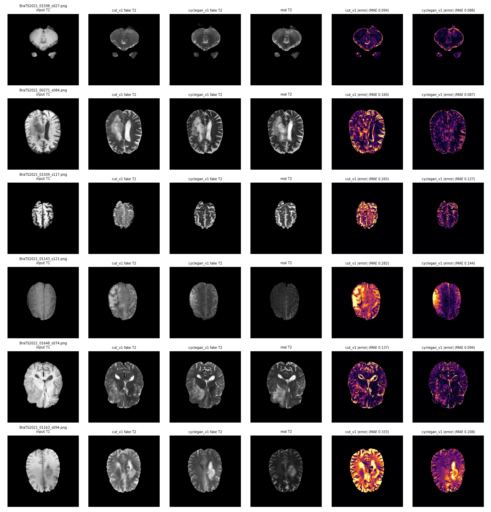
cut_v1), CycleGAN's fake T2 (cyclegan_v1), the real T2, then each model's absolute error inside the brain (brighter = worse, with the per-slice MAE in the title). Look at the error maps: CUT's errors trace the cortical folds, while CycleGAN's are mostly faint. In the bottom row, CycleGAN makes the tumour much brighter than in the real T2, a reminder that it fails too.Is CUT just misaligned? A score this low could come from an output that is correct but slightly displaced. Our shift_check.py slides each output a couple of pixels in every direction and re-scores it. CycleGAN scores best exactly where it is, at (0, 0). CUT has no peak at all, and its unshifted position actually scores lowest. That pattern means its fine structure is partly reversed, not displaced.
The polarity test. To check this, polarity_check.py keeps only the fine detail of each image: the image minus a blurred copy of itself (a Gaussian blur of 2 pixels). It then measures, inside the brain, how that fine detail correlates (from −1 to +1) with the input T1 and with the real T2.
| Fine detail of … | vs input T1 | vs real T2 |
|---|---|---|
| real T2 (reference) | −0.42 | — |
| CUT | +0.43 | −0.13 |
| CycleGAN | −0.47 | +0.42 |
Table 3. Fine-detail correlations on the 200 test slices. In real scans, fine T1 and T2 detail run in opposite directions (−0.42): thin fluid lines are dark in T1 and bright in T2. CycleGAN reproduces that flip; CUT's fine detail still follows the T1.
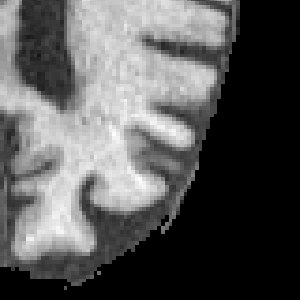
input T1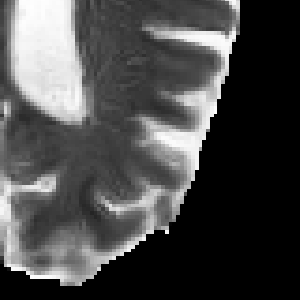
CUT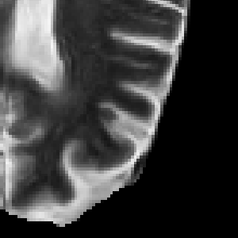
CycleGAN real T2
real T2BraTS2021_00271_s084. In the real T2, the white-matter "fingers" are dark with lighter tissue around them, the reverse of the T1. CycleGAN reproduces that pattern; CUT's version is flatter, with bright streaks where the T1 had them. The difference is easier to measure (Table 3) than to see.Two more observations from this experiment shaped everything after it. First, brain-only scoring matters: whole-image SSIM is 0.814 for CUT and 0.888 for CycleGAN, a gap that looks small, versus 0.146 and 0.512 inside the brain. Second, patients differ in brightness. After normalisation, the median brain brightness of the real T2s ranges from 0.18 to 0.66 across test patients, while every model produces a fairly constant "typical" level. Part of every model's error is this mismatch rather than wrong anatomy. It affects all models alike, so the comparison stays fair.
4.2 Experiment 2: SynDiff out of the box: beautiful, and the worst score
The pictures were the best we had seen: sharp folds, convincing T2 contrast, realistic texture. The score was the worst we had seen. SynDiff original scored brain SSIM 0.105, PSNR 12.04 dB, MAE 0.190, below even CUT.
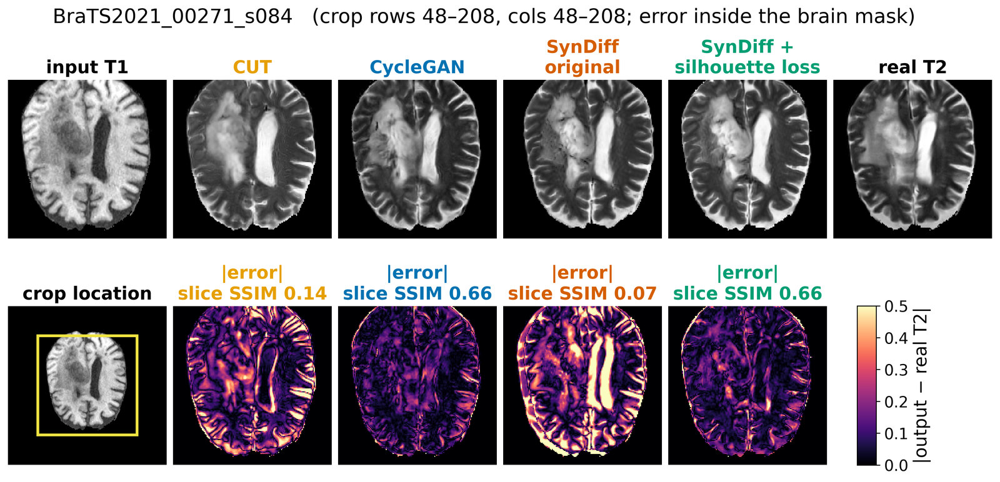
BraTS2021_00271_s084 (a tumour on the left of the image). Top: input T1, each model's output, real T2. Bottom: absolute error inside the brain on one colour scale, with each model's SSIM for this slice. Look at SynDiff original: its output looks like a good T2, yet its error map lights up in bands along the ventricles and the brain edge, and its slice SSIM is 0.07. Those bands are the signature of an image in the wrong place. (The silhouette-loss column is the fixed model from Section 4.5: slice SSIM 0.66, the same as CycleGAN.)4.3 Experiment 3: Finding the shift
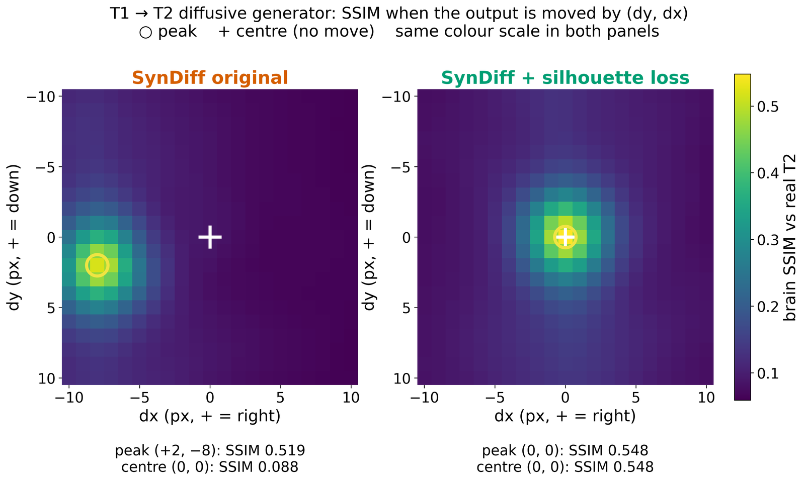
That was the culprit. The original SynDiff's anatomy was largely right; it was drawn in the wrong place, about 8 pixels too far right and 2 pixels too high. Moving the outputs back, a correction of (dy, dx) = (+2, −8) pixels, raises SSIM on those slices from 0.088 to 0.519. On a 256-pixel image, 8 pixels is a small displacement, invisible at a glance, but it ruins every pixel-by-pixel comparison, because folds and ventricles land on top of the wrong tissue.
A legitimate quick fix. We cannot use the real T2 to fix outputs at test time; that would be cheating. But we can use the input. Our align_to_input.py finds, for each output, the whole-pixel shift (within ±16 pixels) that best overlaps the output's brain silhouette with the input T1's silhouette, measured by Dice, and applies it. It never looks at the real T2. With this test-time re-alignment, SynDiff original, re-aligned scores 0.507, close to CycleGAN's 0.512. We ran the same re-alignment on CycleGAN and CUT as a check: it found nothing to correct, and their scores did not change (0.512 and 0.146). The shift is SynDiff's alone.
The shift is not a constant. We scored every saved checkpoint on the validation patients, estimating the needed correction from the input alone. It drifted during training and varied between runs. In the full-data run the correction was (+1, −7) at epoch 5 and settled at (+2, −8) from epoch 15. In the 500-slice run the horizontal correction grew from −1 to −5 pixels. The 2,000-slice run happened to stay within 1 pixel of centre the whole time.
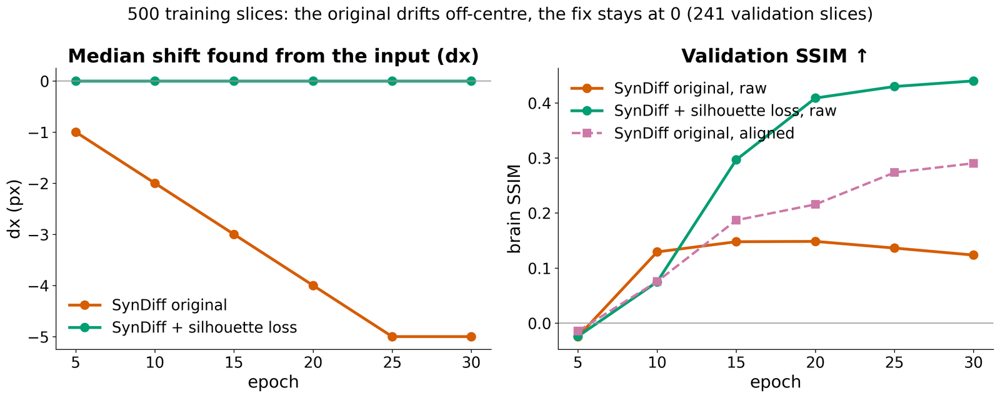
4.4 Experiment 4: Why does the shift happen?
The hypothesis. Look at SynDiff's losses again and ask which one cares where the anatomy is:
- The adversarial losses judge realism, not position. The translation networks' discriminators are PatchGANs, which score local patches. The diffusion discriminators give one score per image, but they add up their features over every position first, so they have little reason to notice where the brain sits. A brain moved 8 pixels still looks like a real brain.
- The cycle loss only asks that the two translation networks undo each other. If the T1 → T2 network moves everything 8 pixels right and the T2 → T1 network moves everything 8 pixels left, the round trip is perfect and the loss is happy.
But the image we actually score comes from the diffusive generator, not the translation network. Here is the link. Recall Figure 5: the T1 → T2 diffusive generator is trained to turn \(F(y)\), a fake T1 made from a real T2 \(y\), back into \(y\). If \(F\) shifts by \(-s\), then every training source is shifted by \(-s\) relative to its target, and the diffusive generator dutifully learns to apply \(+s\). At test time it receives a real, unshifted T1 and still applies \(+s\). Nothing in the training prefers one value of \(s\) over another, which would also explain why it differs from run to run.
The prediction. If this is right, all four generators are shifted: both T1 → T2 generators by \(+s\), both T2 → T1 generators by \(-s\). If instead only the diffusive generators were shifted, the shift would be born in diffusion training, not in the cycle.
The test. syndiff_shift_cause.sbatch runs all four generators of the epoch-30 checkpoint on 50 test slices. It measures each one's shift against the real image of the contrast it produces, so the T2 → T1 generators are compared with the real T1.

4.5 Experiment 5: Choosing a fix, on validation patients only
We tested on 500 slices because each run is cheap and because the 500-slice baseline had drifted (Figure 11), so a fix had something to remove. The two candidates were:
- Silhouette (Section 3.5) at \(\lambda = 0.5\) (SynDiff's own weight for its L1 terms) and \(\lambda = 2\).
- MIND at \(\lambda = 0.25\) and \(\lambda = 1\). The 0.25 weight follows the ratio to the cycle loss used in published MIND-constrained cycle models.
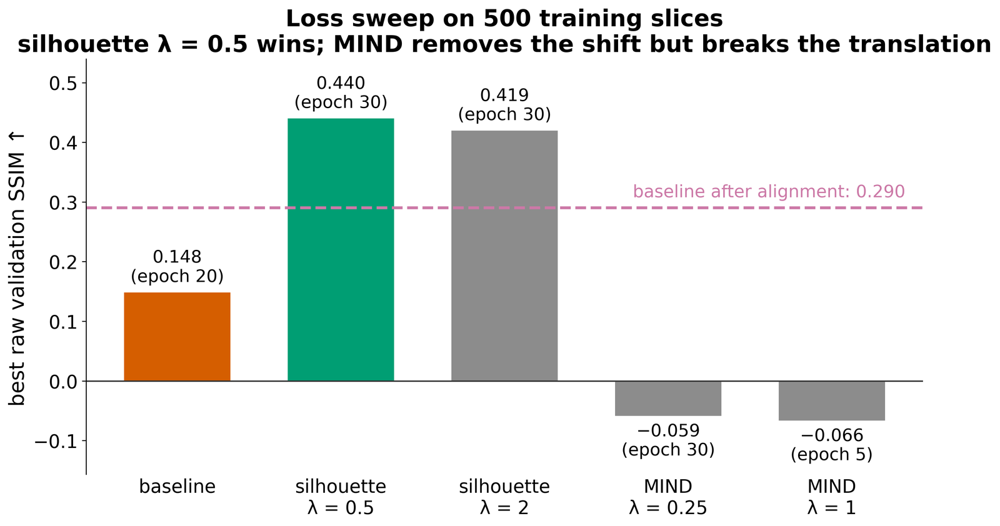
The silhouette loss removed the shift at every epoch from 5 on, at both weights, and \(\lambda = 0.5\) was higher than \(\lambda = 2\) at every epoch from 15 on (0.440 vs 0.42 at epoch 30). MIND also removed the shift, but its validation SSIM was negative at every epoch (−0.06 to −0.14), about the level of handing in the T1 unchanged. We did not investigate why MIND fails here; the rule simply excludes it.
Scaling up. On 2,000 slices, the original run happened to be unshifted, yet the silhouette loss still raised the best validation SSIM from 0.542 to 0.580 (both at epoch 10). On all the data, the fixed run is unshifted at every epoch. Its raw score beats the original's score after re-alignment at every epoch:
| Epoch | Original raw | Original correction (dy, dx) | Original re-aligned | + silhouette raw |
|---|---|---|---|---|
| 5 | 0.114 | (+1, −7) | 0.525 | 0.585 |
| 10 | 0.109 | (+2, −7) | 0.550 | 0.581 |
| 15 | 0.104 | (+2, −8) | 0.551 | 0.585 |
| 20 | 0.107 | (+2, −8) | 0.546 | 0.577 |
| 25 | 0.110 | (+2, −8) | 0.539 | 0.578 |
| 30 | 0.109 | (+2, −8) | 0.527 | 0.568 |
Table 4. Full-data runs, brain SSIM on the 241 validation slices (results/syndiff_val/val_results.csv). The fixed run needs no correction, (0, 0), at every epoch. By our rule, epochs 5 and 15 tie at 0.585, and the lower MAE picks epoch 5.
And the four-generator test from Experiment 4, repeated on the fixed model, puts all four generators at (0, 0) (Figure 13, right column; Figure 10, right panel).
4.6 Experiment 6: The final comparison
Which epoch? For the headline we report epoch 30, SynDiff's final epoch. That is the same rule we applied to the GANs, which are reported at their final epoch. The validation rule's choice, epoch 5, is reported as a secondary result. Neither choice used test numbers.
| Model | SSIM (brain) ↑ | PSNR (brain, dB) ↑ | MAE (brain) ↓ | SSIM (whole image) |
|---|---|---|---|---|
| Identity (input T1 handed in as T2) | −0.130 | 7.70 | 0.375 | — |
| CUT | 0.146 ± 0.092 | 13.17 ± 1.84 | 0.171 ± 0.051 | 0.814 |
| CycleGAN | 0.512 ± 0.129 | 15.90 ± 2.71 | 0.129 ± 0.063 | 0.888 |
| SynDiff original | 0.105 ± 0.049 | 12.04 ± 1.47 | 0.190 ± 0.043 | 0.773 |
| SynDiff original, re-aligned at test time | 0.507 ± 0.125 | 15.82 ± 2.38 | 0.127 ± 0.053 | 0.887 |
| SynDiff + silhouette loss (ours, epoch 30) | 0.543 ± 0.134 | 16.15 ± 2.65 | 0.124 ± 0.056 | 0.897 |
Table 5. Final results on the 200 test slices (20 patients). Mean ± standard deviation over slices; best per column in bold. The validation-selected epoch 5 of our model scores 0.566 / 16.43 dB / 0.121 (secondary). All values from results/results.csv.

Averages can hide a lot, so let's look closer. The slider below shows one test slice, BraTS2021_00359_s082, with large fluid-filled ventricles in the middle. Drag it to compare the two SynDiff models' error maps.
 input T1
input T1 real T2 (answer key)
real T2 (answer key)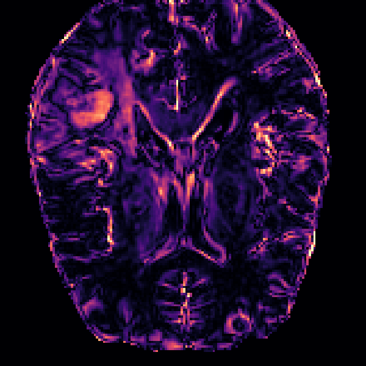
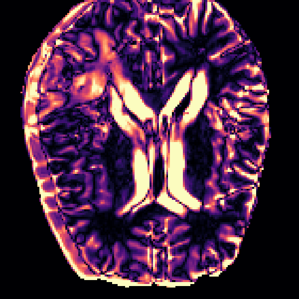
SynDiff originalslice SSIM 0.04 + silhouette loss
slice SSIM 0.71
BraTS2021_00359_s082, cropped, on one colour scale (dark = small error). Left of the line: SynDiff original. Right: SynDiff + silhouette loss. Look at the ventricles: the original's error shows them twice, as bright parallel bands, because its ventricles sit beside the real ones. There is also a bright rim along one side of the brain. With the silhouette loss both disappear, and this slice's SSIM rises from 0.04 to 0.71 (CycleGAN: 0.72).Is the gain over CycleGAN real? CycleGAN is the strongest other model, so we compared it with SynDiff + silhouette loss patient by patient:
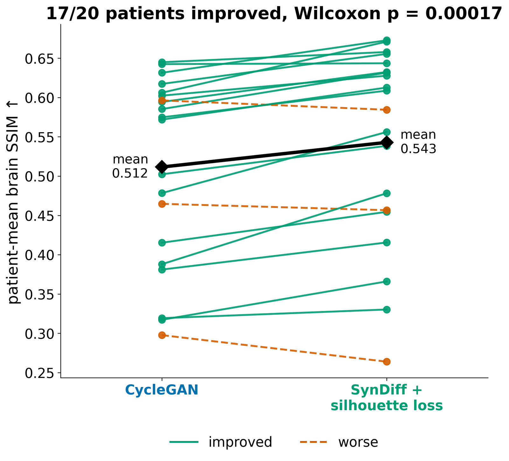
| Metric (patient means) | CycleGAN | + silhouette | Patients improved | Wilcoxon W | p |
|---|---|---|---|---|---|
| SSIM (brain) | 0.512 | 0.543 | 17 / 20 | 13 | 0.00017 |
| PSNR (brain, dB) | 15.90 | 16.15 | 12 / 20 | 75 | 0.28 |
| MAE (brain) | 0.129 | 0.124 | 12 / 20 | 76 | 0.29 |
Table 6. Paired, two-sided Wilcoxon signed-rank test over the 20 patient means (exact method; scripts/wilcoxon_per_patient.py). For MAE, "improved" means lower.
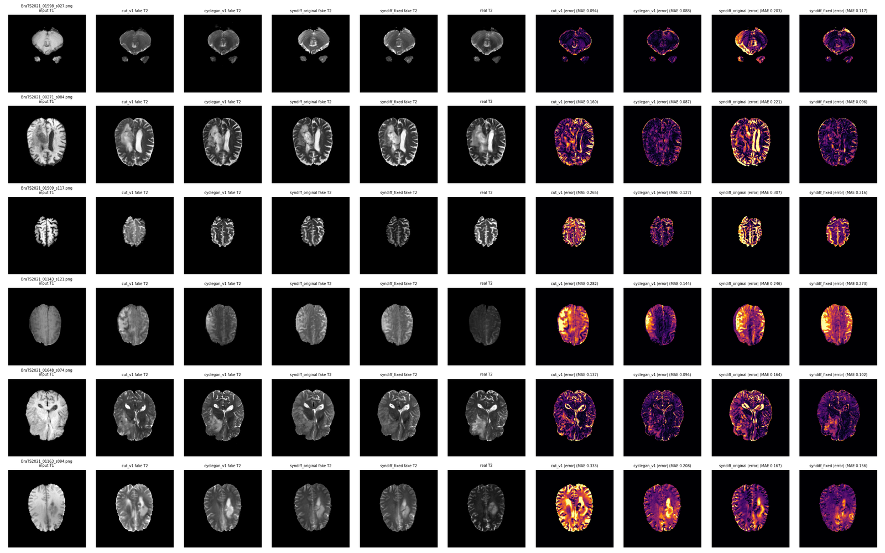
syndiff_fixed = SynDiff + silhouette loss); real T2; then four error maps with per-slice MAE. Look at the fourth row: the real T2 is unusually dark, and every model is too bright. That is the patient-brightness problem from Experiment 1, and no model solves it.4.7 Experiment 7: Does the amount of data matter?
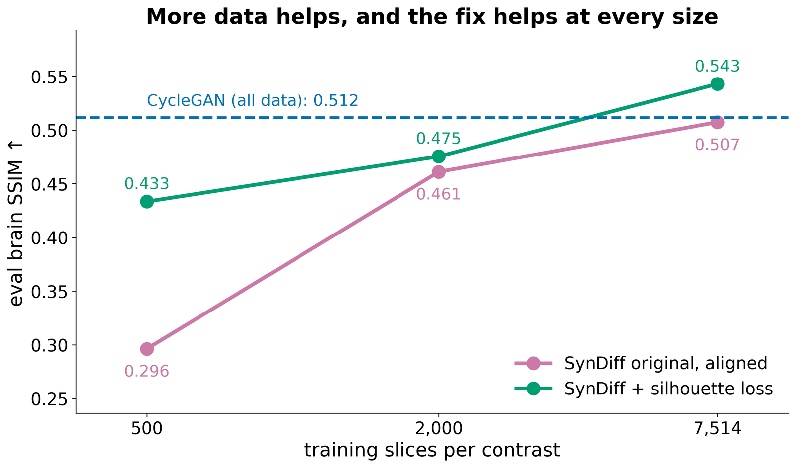
5. Conclusions
Main idea and results
We compared three unpaired methods for turning T1 brain MRI into T2 under identical conditions, scoring only inside the brain. Two lessons stand out. First, the GAN that ties output most tightly to input (CUT) did much worse than CycleGAN. For T1 → T2, "keep the input's local pattern" is partly the wrong goal, because the fine contrast must flip. Second, a strong diffusion model (SynDiff) can produce beautiful images that are systematically misplaced. Its two translation directions learned equal and opposite shifts that cancel on the round trip, and its diffusion generators inherited the shift. A small silhouette loss, chosen on validation patients only, removed the shift from all four generators. It turned SynDiff from the lowest score (brain SSIM 0.105) into the highest (0.543), better than CycleGAN on 17 of 20 patients (p = 0.00017), with PSNR and MAE about level.
The broader takeaway: looking right is not being right. Realism-based losses and whole-image metrics both missed an 8-pixel error that brain-only, per-patient scoring exposed immediately.
Limitations
- One training run per model. We did not measure run-to-run variation, and the shift itself varied between runs. The p-value compares patients, not training runs.
- 2D slices. Each slice is translated on its own, with no 3D context, so neighbouring slices may not be perfectly consistent.
- Patients differ in brightness. The real T2's median brain brightness ranges from 0.18 to 0.66 across test patients, and no model predicts this. Pixel-wise scores punish it for every model.
- CycleGAN and CUT used default settings. They were not heavily tuned, so "CUT did worst" means CUT at its defaults on this task.
- Modest test set. 20 patients and 200 slices; only the SSIM difference with CycleGAN is statistically significant.
- No clinical evaluation. Our scores measure agreement with the real T2, not whether a radiologist would reach the same diagnosis.
Future work
- Several seeds per model, to separate real differences from training luck.
- 3D (or multi-slice) translation, to use context across slices.
- A downstream test: train a tumour-segmentation model and compare its accuracy on real vs synthetic T2.
- A paired upper bound with Pix2Pix [3], using the pairs we hid.
- Unpaired diffusion baselines such as SDEdit [8] and DDIB [9].
- Open questions: why CycleGAN, which also has a cycle loss, did not drift, and why the MIND loss broke the translation.
Reproduce our results
Everything is in the code repository (no data or model weights). In brief:
- Data: request BraTS 2021 Task 1 from the official source (Synapse) and accept its terms. We used the same training set from the Kaggle mirror. Run
preprocess.py; the split and settings are recorded insplit.json. - CycleGAN / CUT: clone the official repos at the commits in
upstream_versions.txt, applypatches/cut_grayscale.patchto CUT, then runcyclegan_v1.sbatchandcut_v1.sbatch, followed byrun_test.sbatch. - SynDiff: clone icon-lab/SynDiff at the pinned commit, convert data with
diffusion/make_mat.py, train withdiffusion/syndiff_train.sbatch(original) ordiffusion/syndiff_sc_train.sbatch n7514 30 silhouette 0.5(ours), and generate withdiffusion/syndiff_infer.sbatch. - Score:
evaluate.py(brain-masked SSIM / PSNR / MAE),diffusion/align_to_input.py(input-only re-alignment) andscripts/wilcoxon_per_patient.py(the per-patient test).
python evaluate.py --run cyclegan_v1 --pred_dir <results>/cyclegan_v1/test_latest/images
python scripts/wilcoxon_per_patient.pyStep-by-step commands are in the repository's README.md, gan/README.md and diffusion/README.md.
Acknowledgements
We thank Dr. Siyu Huang for the course and for feedback during the project, and Clemson University's Palmetto 2 cluster for the GPU time that made these experiments possible. We are grateful to the BraTS organisers and data contributors, and to the authors of CycleGAN, CUT and SynDiff for releasing their code. The format of this post was inspired by Christopher Olah's "Understanding LSTM Networks" and Andrej Karpathy's "The Unreasonable Effectiveness of Recurrent Neural Networks".
References
- I. Goodfellow, J. Pouget-Abadie, M. Mirza, B. Xu, D. Warde-Farley, S. Ozair, A. Courville, Y. Bengio. Generative Adversarial Networks. NeurIPS 2014. arXiv:1406.2661
- X. Mao, Q. Li, H. Xie, R. Y. K. Lau, Z. Wang, S. P. Smolley. Least Squares Generative Adversarial Networks. ICCV 2017. doi:10.1109/ICCV.2017.304
- P. Isola, J.-Y. Zhu, T. Zhou, A. A. Efros. Image-to-Image Translation with Conditional Adversarial Networks (Pix2Pix). CVPR 2017. arXiv:1611.07004
- J.-Y. Zhu, T. Park, P. Isola, A. A. Efros. Unpaired Image-to-Image Translation using Cycle-Consistent Adversarial Networks (CycleGAN). ICCV 2017. arXiv:1703.10593
- T. Park, A. A. Efros, R. Zhang, J.-Y. Zhu. Contrastive Learning for Unpaired Image-to-Image Translation (CUT). ECCV 2020. arXiv:2007.15651
- J. Ho, A. Jain, P. Abbeel. Denoising Diffusion Probabilistic Models. NeurIPS 2020. arXiv:2006.11239
- Z. Xiao, K. Kreis, A. Vahdat. Tackling the Generative Learning Trilemma with Denoising Diffusion GANs. ICLR 2022. arXiv:2112.07804
- C. Meng, Y. He, Y. Song, J. Song, J. Wu, J.-Y. Zhu, S. Ermon. SDEdit: Guided Image Synthesis and Editing with Stochastic Differential Equations. ICLR 2022. arXiv:2108.01073
- X. Su, J. Song, C. Meng, S. Ermon. Dual Diffusion Implicit Bridges for Image-to-Image Translation (DDIB). ICLR 2023. arXiv:2203.08382
- M. Özbey, O. Dalmaz, S. U. H. Dar, H. A. Bedel, Ş. Özturk, A. Güngör, T. Çukur. Unsupervised Medical Image Translation with Adversarial Diffusion Models (SynDiff). IEEE Transactions on Medical Imaging 42(12), 2023. doi:10.1109/TMI.2023.3290149 · arXiv:2207.08208 · code
- J. P. Cohen, M. Luck, S. Honari. Distribution Matching Losses Can Hallucinate Features in Medical Image Translation. MICCAI 2018. arXiv:1805.08841
- M. P. Heinrich et al. MIND: Modality Independent Neighbourhood Descriptor for Multi-Modal Deformable Registration. Medical Image Analysis 16(7), 2012. doi:10.1016/j.media.2012.05.008
- H. Yang, J. Sun, A. Carass, C. Zhao, J. Lee, Z. Xu, J. Prince. Unpaired Brain MR-to-CT Synthesis using a Structure-Constrained CycleGAN. DLMIA (MICCAI workshop) 2018. arXiv:1809.04536
- U. Baid et al. The RSNA-ASNR-MICCAI BraTS 2021 Benchmark on Brain Tumor Segmentation and Radiogenomic Classification. 2021. arXiv:2107.02314
- B. H. Menze et al. The Multimodal Brain Tumor Image Segmentation Benchmark (BRATS). IEEE Transactions on Medical Imaging 34(10), 2015. doi:10.1109/TMI.2014.2377694
- S. Bakas et al. Advancing The Cancer Genome Atlas glioma MRI collections with expert segmentation labels and radiomic features. Scientific Data 4, 2017. doi:10.1038/sdata.2017.117
- Z. Wang, A. C. Bovik, H. R. Sheikh, E. P. Simoncelli. Image Quality Assessment: From Error Visibility to Structural Similarity. IEEE Transactions on Image Processing 13(4), 2004. doi:10.1109/TIP.2003.819861